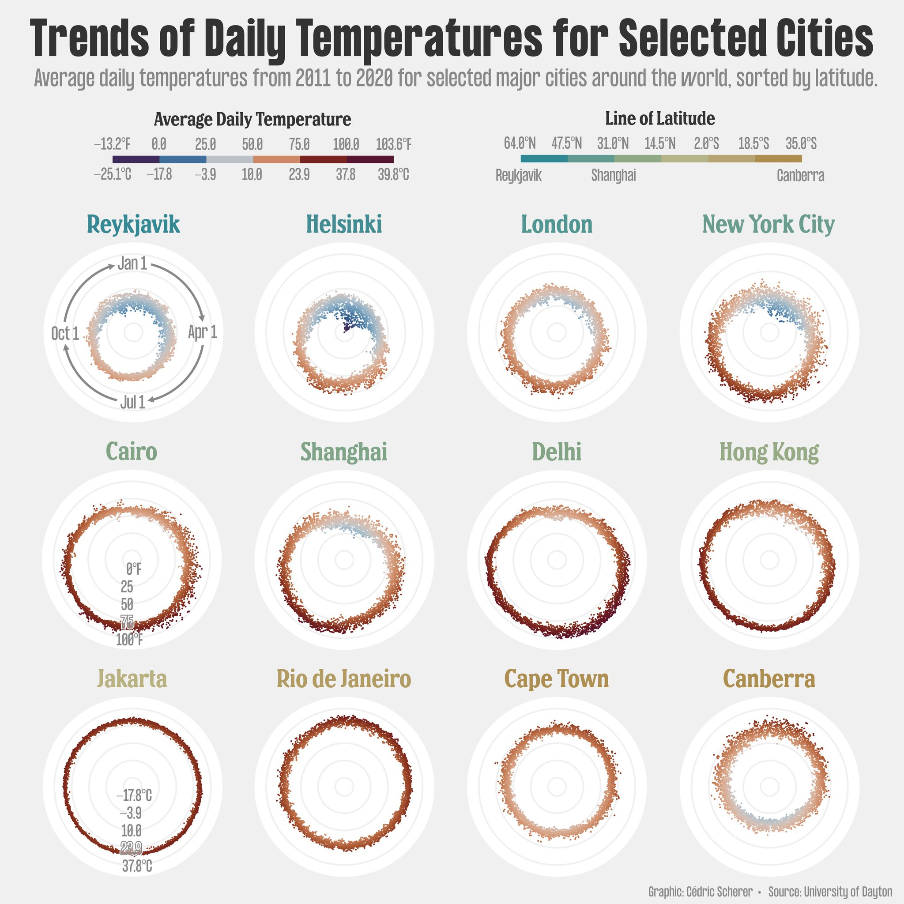
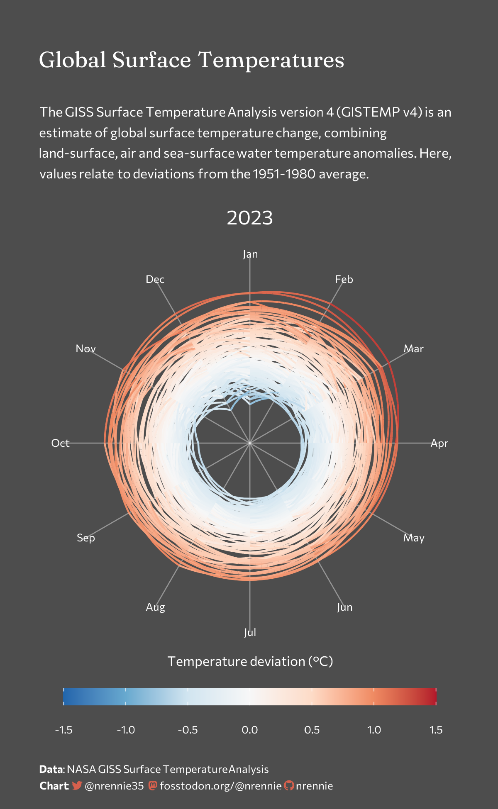
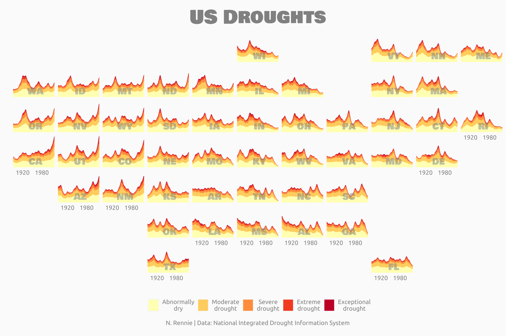
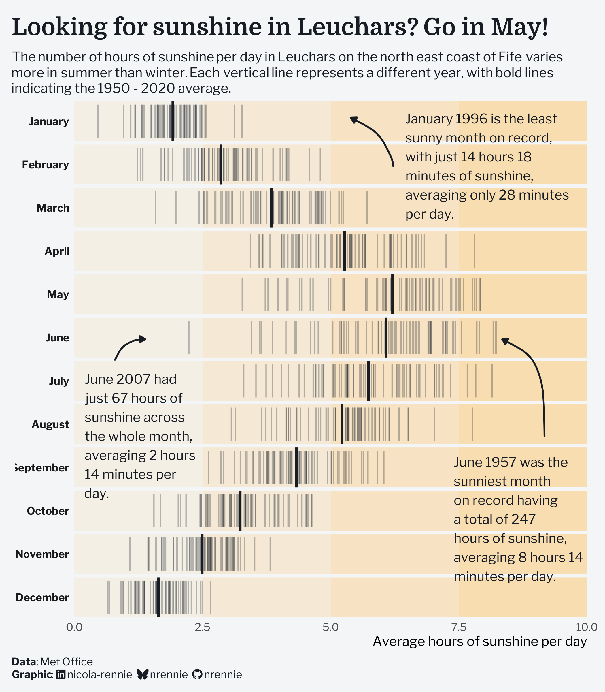
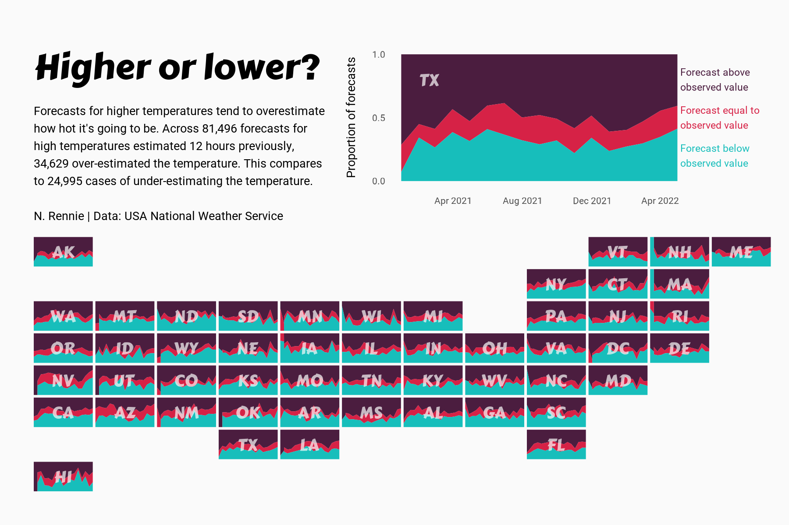
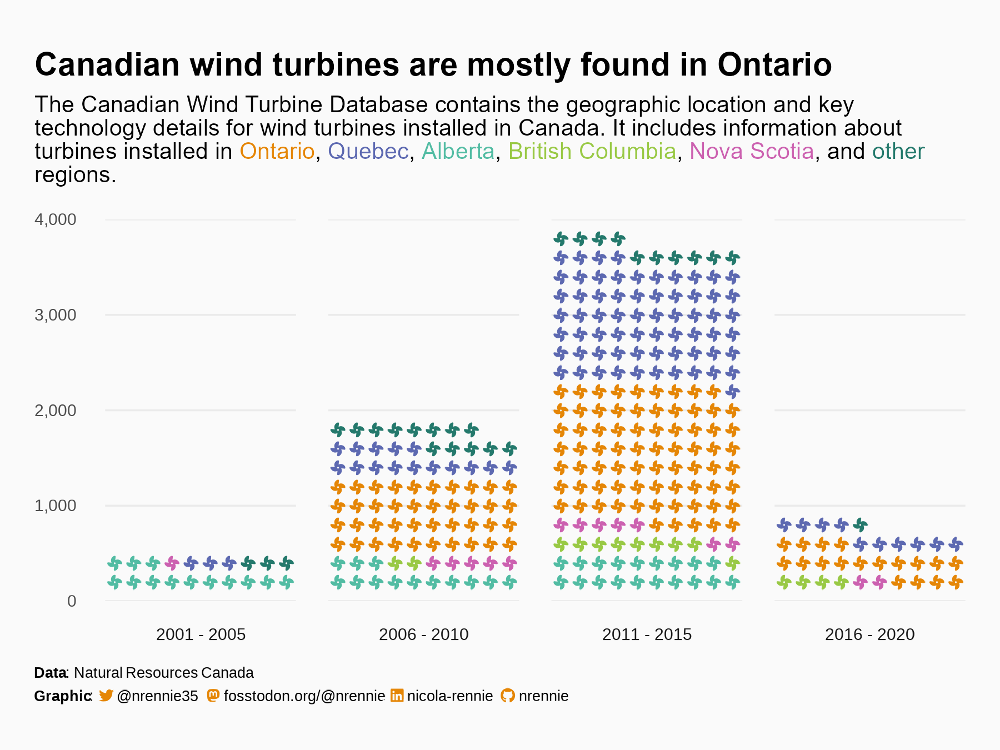
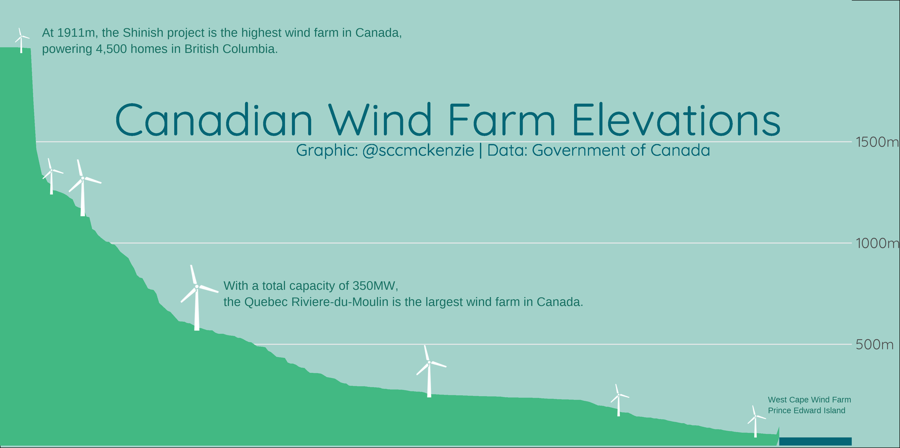
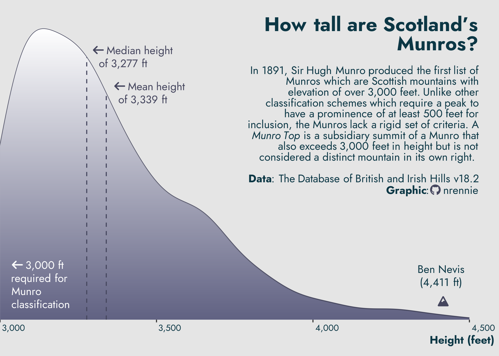
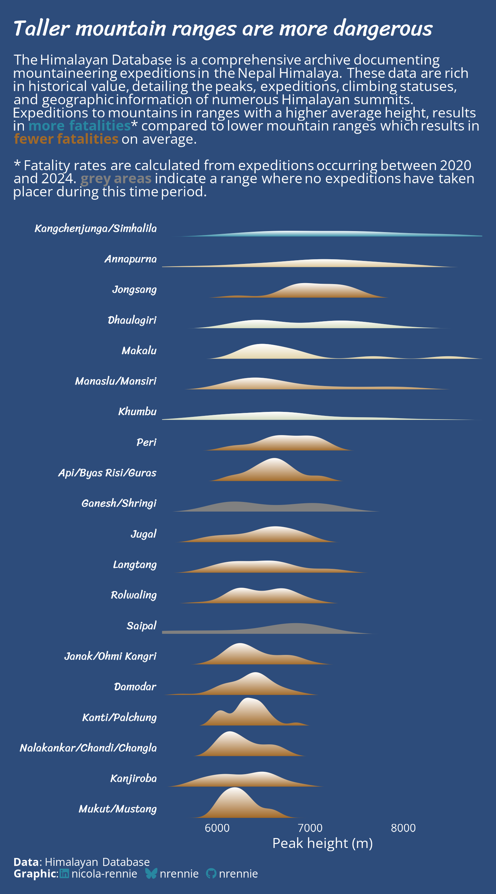
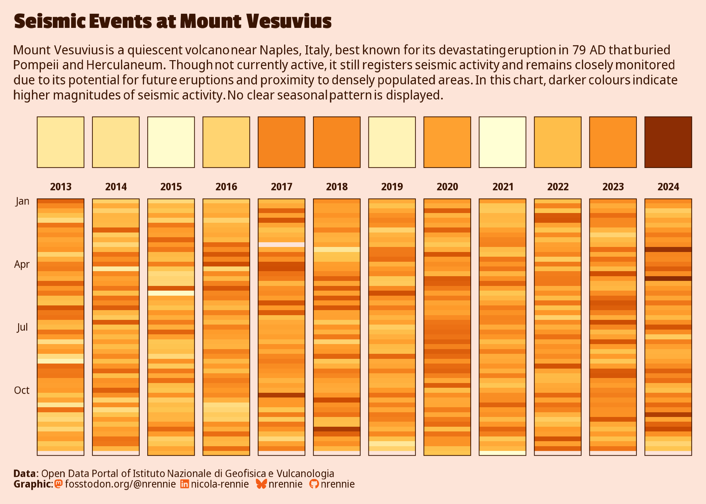

Site Assessment Data Visualization — reference set
Ten real, reproducible R/ggplot2 charts pulled directly from the TidyTuesday community archive — the actual rendered images, not descriptions of them — chosen for technique that transfers to KED's regional / neighborhood / parcel illustration work. Every card names its source repo so a coding agent can go read the code, not just look at the picture.

Existing KED style anchor — not TidyTuesday
Cédric Scherer · data: University of Dayton. Already sitting in docs/reference/dataViz_temp.jpg as the visual target — radial small multiples, one city per panel, muted warm-to-cool gradient. Included here so it sits next to its own community, not as a new find.

Nicola Rennie · TidyTuesday 2023‑07‑11 · NASA GISTEMP v4 · source code
Radial year-ring chart: each month is a spoke, each ring a year, color is temperature deviation from the 1951–1980 baseline. Rings drift outward and redward over time.
Transfer: a real precedent for a circular, ring-per-year layout — close in spirit to KED's own polar reference chart above, but encoding trend-over-time instead of one year's daily cycle.

Nicola Rennie · TidyTuesday 2022‑06‑14 · National Integrated Drought Information System · source code
Geofaceted small multiples — one stacked-severity area chart per state, arranged in the real shape of the US map, all sharing one axis and one 5-tier severity color ramp.
Transfer: raw severity categories stacked, not collapsed to one number — exactly KED's own convention of keeping raw fields (e.g. flood zone categories) uncollapsed until synthesis.

Nicola Rennie · TidyTuesday 2025‑10‑21 · UK Met Office · source code
One strip per month, every year plotted as a thin vertical rule on the same scale, a bold rule marking the 70-year average — a station-level climate-normal record shown as distribution, not just a mean.
Transfer: directly on-topic for PRISM climate normals — shows the spread behind a "normal," which a single mean figure in KED's report would otherwise hide.

Nicola Rennie · TidyTuesday 2022‑12‑20 · US National Weather Service · source code
Same geofacet-small-multiples device as the drought chart, this time for a modeled-estimate-vs-observed relationship, with one state enlarged as a legible "how to read this" key.
Transfer: a worked pattern for "estimate vs. ground truth," relevant once KED layers practitioner field annotation over acquired data (Layer 3 synthesis).

Nicola Rennie · TidyTuesday 2020‑10‑27 · Natural Resources Canada · source code
Isotype/pictogram count chart — one turbine glyph per unit, colored by province, grouped into five-year bins. Every mark is literally the thing being counted.
Transfer: a plain-language device worth knowing about for a client-facing report — makes a count legible without a reader needing to interpret an axis.

@sccmckenzie · TidyTuesday, Canadian Wind Turbine dataset · Government of Canada · source code
Turbine sites re-sorted by elevation and rendered as a single continuous mountain-silhouette area — a literal terrain profile built entirely from tabular data, no DEM raster involved.
Transfer: the closest thing in this set to an elevation-profile illustration — worth a look for KED's own contour/elevation work even though the underlying data isn't a DEM.

Nicola Rennie · TidyTuesday 2025‑08‑19 · Database of British & Irish Hills · source code
A single elevation-density ridge with the classification threshold, median, mean and the tallest peak all called out as reference lines directly on the curve — no legend needed.
Transfer: a clean pattern for KED's slope/erosion-threshold graphics — annotate the real regulatory or NRCS threshold directly on the distribution, the way parcel_slope_drainage.R's 20%-grade line could be.

Nicola Rennie · TidyTuesday 2025‑01‑21 · The Himalayan Database · source code
A true ridgeline — peak-height distribution per mountain range, stacked, colored by a derived risk metric (fatality rate) rather than by the raw height itself.
Transfer: same move as KED's Graphic 2 (slope % as the encoded variable, not raw elevation) — derived risk/metric drives color, raw terrain drives shape.

Nicola Rennie · TidyTuesday 2025‑05‑13 · Istituto Nazionale di Geofisica e Vulcanologia · source code
Two-tier calendar heatmap: geom_tile() annual-summary strip above a geom_raster() week-by-week grid per year, twelve years faceted side by side, one shared magnitude palette.
Transfer: a real worked example of tiling a derived-metric grid across a facet — directly applicable if KED ever needs a "years of drought/flood history at this site" summary view.